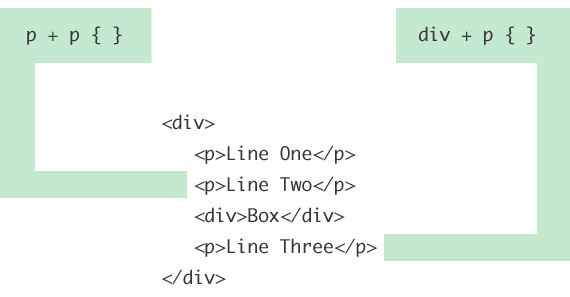

De adjacent selector tussen broers en zussen in CSS is geen selector op zichzelf, maar een manier om twee selectors te combineren.
Het plusteken + is de aangrenzende combinator tussen twee alinea-tag element selectors. Dit betekent "selecteer een alineatag die direct na een andere alineatag staat met niets ertussenin". Hier zijn enkele voorbeelden van wat het zou selecteren:
